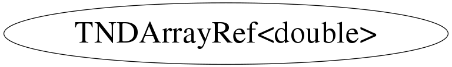

class TNDArrayRef<double>
TNDArray N-Dim array class. Storage layout: Assume 3 dimensions, array sizes 2, 4 and 3 i.e. 24 bins: Data is stored as [0,0,0], [0,0,1], [0,0,2], [0,1,0],... fSizes stores the combined size of each bin in a dimension, i.e. in above example it would contain 24, 12, 3, 1. Storage is allocated lazily, only when data is written to the array. TNDArrayRef gives access to a sub-dimension, e.g. arr[0][1] in above three-dimensional example, up to an element with conversion operator to double: double value = arr[0][1][2];
This class is also known as (typedefs to this class)
TNDArrayRef<Double_t>Function Members (Methods)
public:
| TNDArrayRef<double>(const TNDArrayRef<double>&) | |
| TNDArrayRef<double>(const double* data, const Long64_t* sizes) | |
| ~TNDArrayRef<double>() | |
| static TClass* | Class() |
| TClass* | IsA() const |
| double | operator double() const |
| TNDArrayRef<double> | operator[](Int_t idx) const |
| void | ShowMembers(TMemberInspector&) |
| void | Streamer(TBuffer&) |
| void | StreamerNVirtual(TBuffer& ClassDef_StreamerNVirtual_b) |
Data Members
private:
| const double* | fData | pointer into TNDArray's fData |
| const Long64_t* | fSizes | pointer into TNDArray's fSizes |
Class Charts



Function documentation
TNDArrayRef<T> operator[](Int_t idx) const